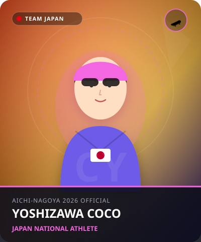

アーバンスポーツ
•
スケートボード / 女子ストリート
よしざわ ここ
吉沢 恋
Coco Yoshizawa
🏢 所属: ACT SB STORE
🏅 パリ五輪金メダル（14歳での快挙）🏅 ビッグスピンフリップフロントサイドボードスライド
14歳で世界を制したストリートの新世代ヒロイン！度胸満点のビッグトリックで魅せる
経歴・これまでの歩み
小学1年生でスケートボードを始め、地元の公園で家族とともに練習を重ねる。SNSを使わずマイペースに技を磨き、東京五輪の中継で見た技を自分もすでにできていたことから世界を目指す。予選シリーズで急成長し、2024年パリ五輪で圧巻のビッグスピンフリップフロントサイドボードスライドを決めて金メダルを獲得した。
主要大会ハイライト戦績
2024年
パリオリンピック
女子ストリート 金メダル（14歳）
2024年
OQSブダペスト
優勝（五輪切符獲得）
プレイスタイル＆世界を制する武器
男子顔負けの大きなセクション（階段や手すり）への恐怖心を感じさせないアタック。ボードを空中で回転させながらレールに乗る複合トリックの完成度がずば抜けています。
愛知・名古屋2026への決意とメッセージ
大会スケジュール＆観戦のツボ
🗓️ 出場予定日程・会場
2026年9月20日 予選 / 9月21日 決勝
👀 観戦の注目ポイント
小柄な体から繰り出される豪快なレールトリックと、成功させた後のとびきりの笑顔。